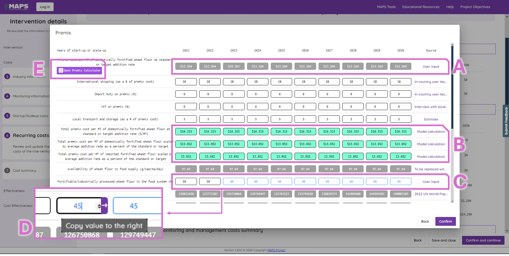

8 Cost and effectiveness model features
The user does not need to create both Cost and Effectiveness fully parameterised models. Either of these can be used independently, with only the “intervention” (steps 1 and 2) information being essential to both. The current screen is shown as a large box/font - here it is step 3 “Industry information”.
8.2 Creating an intervention
Once the button to create a new intervention is selected (Area D above), a series of pop up screens will allow the user to define the model country, focus micronutrient, intervention type, food vehicle, base year, status, nature of the intervention, reference household member, and finally name and describe the model. The functionality on these pop-ups is consistently either a drop down option, or free text entry.
The figure below shows the first of these screens, with the first four of these parameter options, as an example.
The index version of this image shows where key user features can be found.
Area A: This shows a “?” symbol - this provides some additional information for the user about each drop down box.
Area B: This indicates the triangle symbol consistently used to indicate drop-down menu options from which the user can select.
Area C: Above shows the default image when the page is open - this is replaced by further user help/support descriptions of the selected drop down options.
Area D: These buttons enable a user to cancel or move forward (and ultimately save) their intervention. This location and style is consistently used through the cost and effectiveness model options for moving forward/backward, or saving.
Once this is complete, the tool will return the user to the landing page for interventions, from where the model can now be edited.
Area A: This area contains the index of models created, and saved, by the user. Here two models have been created.
Area B: This shows the options to delete/edit/copy the model. Selecting ‘edit’ allows a newly created model to be parameterised with user data, or an existing model updated.
The MAPS tool does not restrict the permutations of nutrient and food vehicle (or any other parameter) that the user can select. It is the user’s responsibility to ensure that the models are feasible and correctly parmaterised.
8.3 Model editing
Once the user has selected the model to edit, a new left-side navigation pane will appear, as shown below. This helps the user to understand where they are in the full twelve-step process of creating a Cost Effectiveness model.
A further consistently applied feature, is that where data are modifiable, this is indicated by a change in the format of the box around the data, and the colour of the data font itself.
‘Model calculated values’ are derived from other input data, which may be editable, and these can be overwritten by the user.
‘User-overidden values’ are where the model calculated values have been overwritten.
‘User defined values’ are where the user has overwritten the default values provided in MAPS.
‘Non editable values’ are where the user cannot modify figures (or calculated values).
When a screen is viewed, some have further options available by clicking on the row name and the editable icon which are both shown in purple.
Examples of of these features are shown below in the image of a “Recurring costs” screen, on the “recurring premix costs summary” selection of the ‘premix’ icon .

Area A: non-editable data cells
Area B: model calculated values
Area C: editable (black font, left side) default values, and edited (blue font) user input values. Pop-up Area D shows the ‘copy values to the right’ feature, which means that the same value easily can be propagated to future years.
Area E: shows the premix calculator available for LSFF cost modelling.
8.3.1 Pre-mix calculator
It is expected that in LSFF modelling, a considerable proportion of the costs will be related to the pre-mix. We therefore provide a pre-mix calculator feature to enable detailed user costs to be included. The pre-mix calculator is is found by navigating to “Recurring costs” -> “recurring premix costs summary” -> “Premix” once the editable icon is selected.

8.3.2 Summary pages
This section is still under construction.
8.4 Cost and effectiveness summary
This section is still under construction .
8.5 Comparing models
This section is still under construction .